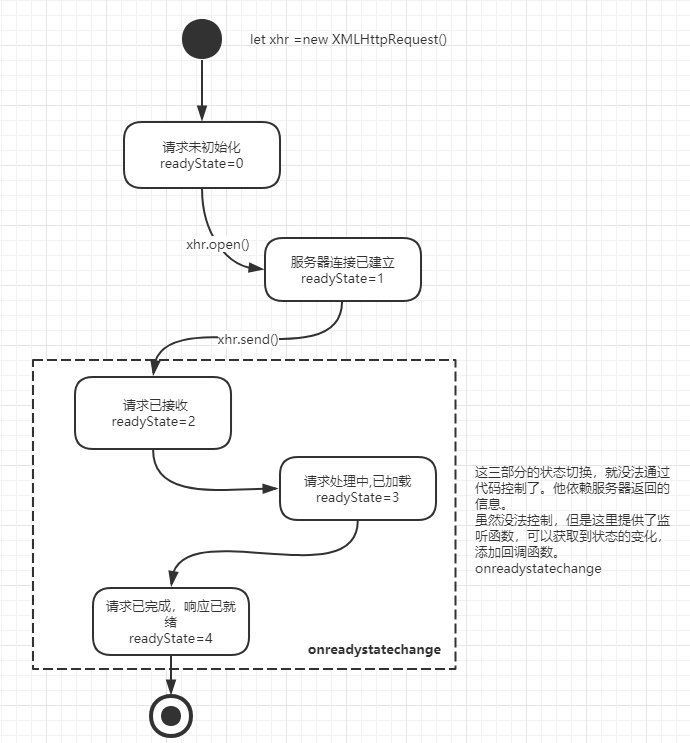

本文整理在，我的github上。欢迎Star。
说起ajax，就不得不说他背后的核心对象XMLHttpRequest，而说到XMLHttpRequest我觉得，从它的readyState状态说起是最好的切入点。
个人觉得，只要弄清楚了readyState的这几个状态，其实ajax的原理也就算弄清楚了。为了更方便您理解，笔者特意画了一张状态图。
您只需要看懂这张图ajax原理，您就算通关了；并且很难忘记。
首先let xhr = new XMLHttpRequest();，新建一个XMLHttpRequest对象。此时xhr对象的readyState=0，表示请求未初始化。
您需要调用xhr.open(method,url,async)，告诉xhr请求的方式，URL，同步or异步，让其初始化。如果执行完了这句，xhr.readyState=1，表示连接已经建立好了。
但是，如果您想发出请求，您就需要调用xhr.send()方法，如果是POST请求，您需要设置send()的参数，send(data)。调用过xhr.send()后，xhr.readyState就变成了2,请求已接收状态，或者说我们已经发出了请求。
后面的几个状态，就不需要我们通过代码去改变他了。我们的请求会通过网络，到达指定服务器，服务器响应后，再通过网络返回给我们。这个状态，我们也无法通过代码去改变。但是我们可以通过监听函数onreadystatechange去获取请求传输的进度。
当我们受到第一个字节开始，xhr.readyState=3。
在接收完全部响应数据后，请求完成，此时xhr.readyState=4。

ajax原理，就是0、1、2、3、4。，记住了么？
function ajax(option){
new promise((resolve, reject) =>{
let xhr = new XMLHttpRequest();
xhr.open(option.method,option.url,option.async);
if(option.method === 'POST'){
xhr.send(option.data);
}else{
xhr.send();
}
xhr.onreadystatechange=function()
{
if (xhr.readyState === 4)
{
if(xhr.status === 200){
resolve(this.responseText);
}else{
reject();
}
}
}
});
}
ajax({
url:'xxxx',
method:'POST',
async: false,
})
.then(data=>{
//....
})